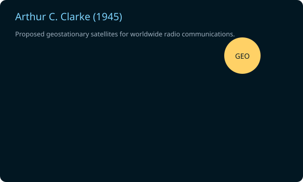

Interactive Timeline
From wild idea → realityMove the slider to pick a prediction — see the original claim, year made, and how it turned into reality.

Arthur C. Clarke: Geostationary Satellites (1945)
Clarke proposed geostationary satellites for worldwide radio communications — a bold idea when rockets were new.
Believability at the time
Outcome
Became reality
Deep‑dives
Read original claims & modern contextArthur C. Clarke (1945)
Paper \"Extra-Terrestrial Relays\" proposed geostationary satellites for communication. This inspired modern communication satellites.
More →Jules Verne (1865)
From the Earth to the Moon described launching from Florida, trajectory math, and ocean splashdown — elements similar to Apollo.
More →H. G. Wells (1914)
The World Set Free described atomic bombs decades before the Manhattan Project; it influenced early thinkers.
More →Alan Turing (1950)
Turing proposed the imitation game (Turing Test) and argued for machines that could think — a foundation for AI.
More →How did a wild idea become real?
Paths from idea to realityQuick Quiz
Test your intuitionWhich prediction is oldest?